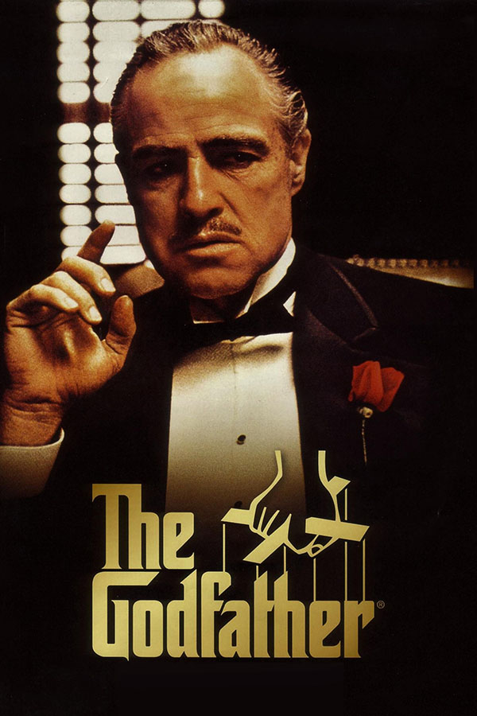
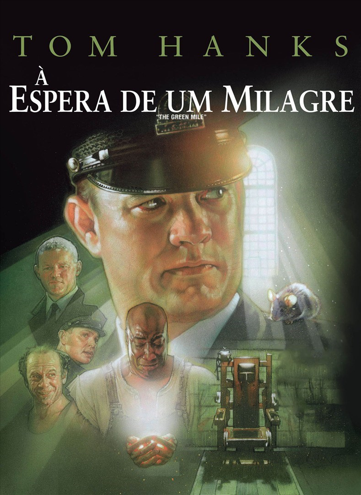

- O Poderoso Chefão  Sinopse
- Um Sonho de Liberdade
- À Espera de um Milagre  Sinopse
- O Resgate do Soldado Ryan Sinopse
- Até o Último Homem Sinopse
Uma família mafiosa luta para estabelecer sua supremacia nos Estados Unidos depois da Segunda Guerra Mundial. Uma tentativa de assassinato deixa o chefão Vito Corleone incapacitado e força os filhos Michael e Sonny a assumir os negócios.
Disney+ Mercado Play Netflix Paramount+ Sinopse
Sinopse
Andy Dufresne é condenado a duas prisões perpétuas consecutivas pelas mortes de sua esposa e de seu amante. Porém, só Andy sabe que ele não cometeu os crimes. No presídio, durante dezenove anos, ele faz amizade com Red, sofre as brutalidades da vida na cadeia, se adapta, ajuda os carcereiros, etc.
MAXUm carcereiro tem um relacionamento incomum e comovente com um preso que está no corredor na morte: Coffey, um negro enorme, condenado por ter matado brutalmente duas gêmeas de nove anos. Ele tem tamanho e força para matar qualquer um, mas seu comportamento é completamente oposto à sua aparência. Além de ser simples, ingênuo e ter pavor do escuro, ele possui um dom sobrenatural. Com o passar do tempo, o carcereiro aprende que, às vezes, os milagres acontecem nos lugares mais inesperados.
MAXDurante a Segunda Guerra Mundial, o capitão John Miller leva seus homens para trás das linhas inimigas para encontrar o soldado James Ryan, cujos três irmãos foram mortos em combate. Cercados pela brutal realidade da guerra, cada homem embarca em uma jornada pessoal e descobre sua própria força para triunfar sobre um futuro incerto com honra, decência e coragem.
Mercado Play Netflix GloboplayAcompanhe a história de Desmond T. Doss, um médico do exército americano que, durante a Segunda Guerra Mundial, se recusa a pegar em armas. Durante a Batalha de Okinawa ele trabalha na ala médica e salva cerca de 75 homens.
Prime video MAX